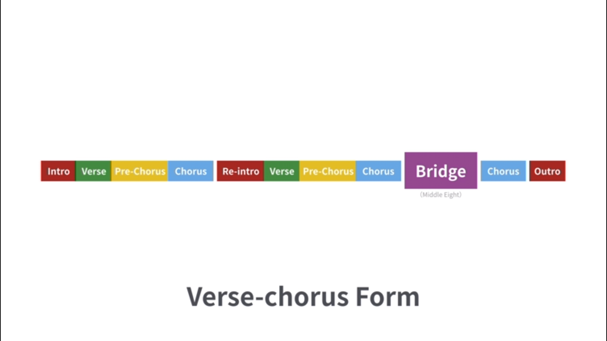

NiceChord 官网. NiceChord 的 YouTube Channel
1 Ep01. 流行歌曲走向
1.1 低音下行走向
C调
C G/B Am Em/G F C/E Dm G
1.2 列表
- 情非得已
- 老男孩(高潮部分)
- 千里之外(高潮部分)
- 小幸运(高潮部分) ...
1.3 常用调的和弦
| 调 | 和弦 |
|---|---|
| C | C G/B Am Em/G F C/E Dm G |
| G | G D/#F Em Bm/D C G/B Am D |
| D | D A/#C Bm #Fm/A G D/#F Em A |
| A | A E/#G #Fm #Cm/E D D/#F Em A |
2 Ep21,22 大调和小调
2.1 大调
1 2 3 4 5 6 7 1
2.2 小调
2.2.1 自然小调(Natural Minor Scale)
1 2 b3 4 5 b6 b7 1
2.2.2 和声小调(Harmonic Minor Scale)
为了使用 G7, 所以将 b7 -> 7
1 2 b3 4 5 b6 7 1
2.2.3 旋律小调(Melodic Minor Scale)
但是这样的话, 有一个 b6 7 的 增二度.
如果旋律往上, 则升高6, 7音; 如果旋律往下, 则恢复原状
1 2 b3 4 5 6 7 1 1 b7 b6 5 4 b3 2 1
3 Ep03. Add2
C: 1 3 5
Cadd2: 1 2 3 5
Cmadd2: 1 2 b3 5
进行I:
Cadd2 Amadd2 Fadd2 Gadd2 C
进行II:
Ab Bb Fm Db
4 Ep07. 十二小节蓝调
The twelve-bar blues or blues changes is one of the most prominent chord progressions in popular music.
C7 C7 C7 C7 F7 F7 C7 C7 G7 F7 C7 C7
变种I: 去掉 5度音
C7: 1 3 b7 F7: 4 6 b3 G7: 5 7 4
变种II: 让高音的位置离得更近
C7: 1 3 b7 F7: 4 b3 6 G7: 5 4 7
变种III: 添加9度音和13度音
C9: 1 3 b7 2 F13: 4 b3 6 2 G13: 5 4 7 3
再添加 Walking Bass
5 Ep10. Walking Bass
每个音都一样长
分解和弦
音的顺序改变, 使得相邻的音联结起来
加入经过音, 如2
添加下一小节的高/低半音
添加8分音符或者三连音等等
6 Ep19. 13和弦
版本I: 1 3 7 13
版本II 1 3 7 9 13
版本III 1 7 9 13
7 Ep34. 蓝调即兴
蓝调音阶: 1 b3 4 b5 5 b7 1
8 Ep.90 好和弦分析五月天《後來的我們》

Intro: 前奏 Verse: 主歌 Chorus: 副歌, 高潮部分, 最重要的段落 Re-intro/Interlude: 间奏 Bridge/Middle Eight: 桥段 Outro: 尾奏
9 其他
C Phrygian
C Phrygian Dominant
即兴方式
C Db